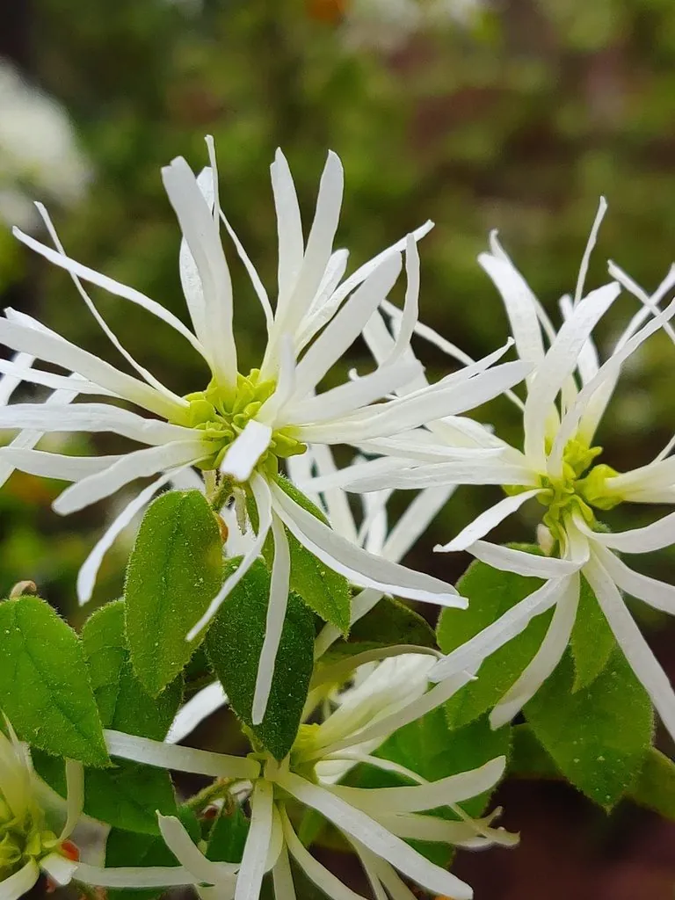

灌木与花木 · 植物界
红花檵木 Loropetalum chinense var. rubrum

金缕梅科檵木属常绿灌木，叶紫红、花玫红，花瓣细长如带状，是南方园林中最常用的彩叶绿篱与造型植物。
- 分类
- 门被子植物门纲木兰纲目虎耳草目科金缕梅科属檵木属
- 栖息环境
- 低山丘陵与园林绿地，喜光耐半阴、耐修剪
- 地理分布
- 原产中国湖南浏阳、江西萍乡一带；长江流域及以南广泛栽培
- 保护级别
- 暂无评估；园艺栽培变种，不涉及保护等级
物种志
红花檵木为金缕梅科檵木属常绿灌木，高可达两米，分枝密集，全株被星状毛。叶片互生，革质，卵形，紫红色至暗红色，边缘全缘，表面有光泽。花三至八朵簇生于枝顶，花瓣四枚，带状细长，玫红色至紫红色，花期三至四月，可持续至五月；蒴果倒卵形，成熟时褐色开裂，果期八至九月。
红花檵木是檵木的紫叶变种，原产中国湖南浏阳、江西萍乡一带，现长江流域及以南地区广泛栽培。它喜光也耐半阴，耐修剪、耐瘠薄，适宜酸性至微酸性土壤，在阳光充足处叶色更红。叶色紫红、花期整齐，是制作绿篱、色块和造型球的优良材料，也可作盆景；木质坚韧，根可入药。园林中常与金叶女贞、红叶石楠搭配形成色彩对比。
形态与习性
- 株高可达 2 m，分枝密集
- 花期3–5 月，花瓣带状玫红
- 果期8–9 月，蒴果褐色
- 光照喜光，光照足则叶更红
- 水分喜湿润，耐短期干旱
- 土壤酸性至微酸性壤土
- 主要用途彩叶绿篱、造型球与盆景
趣味知识
- 红花檵木的花瓣细长如带状，四枚一组，像红色的小流苏。
- 它的紫叶性状来自湖南浏阳的野生变异，后经选育成为园林主流品种。
- 在阳光充足处叶片呈深紫红色，荫蔽处则偏绿，色彩随光照变化。